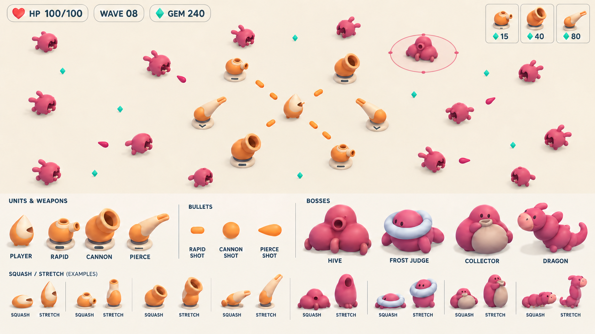
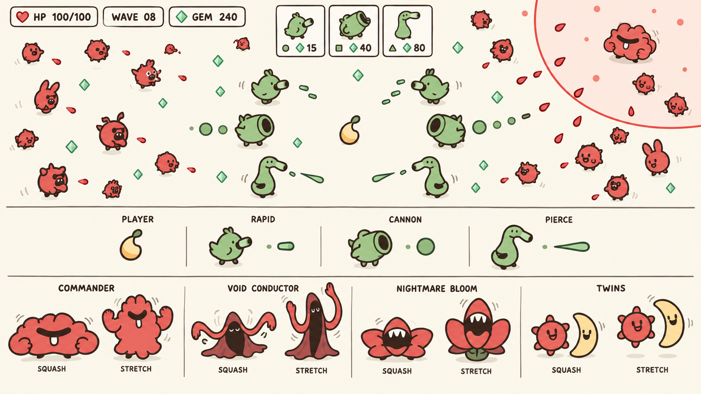
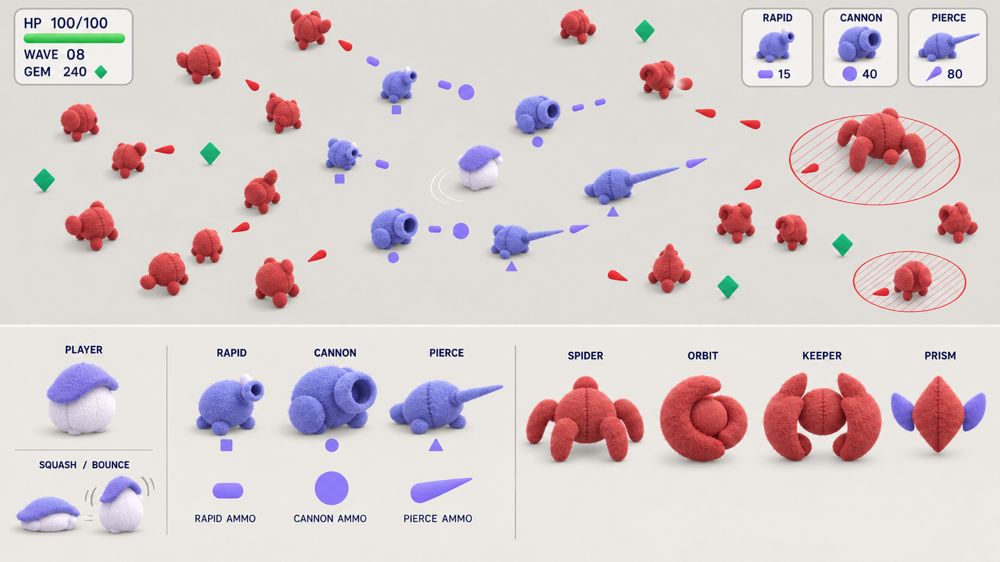
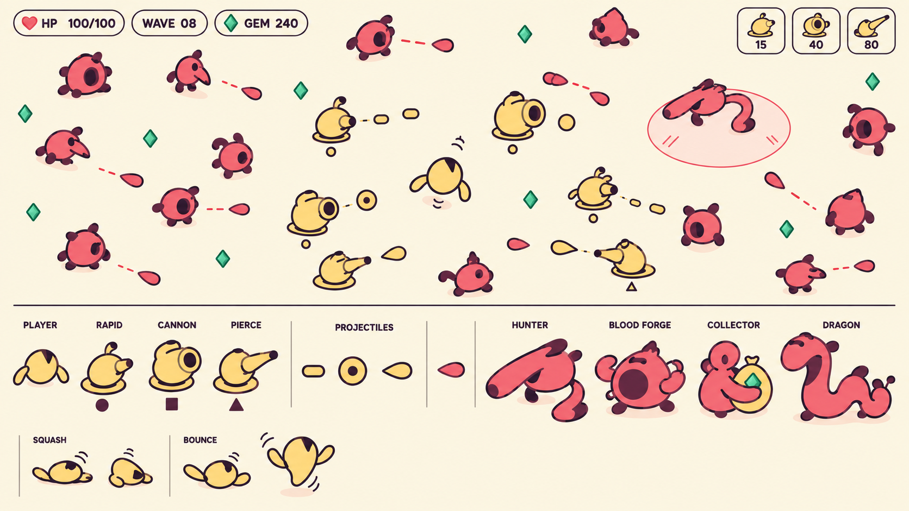

第五轮：圆润器官、柔软角色与压扁／弹起姿态。四稿从材质、线条、配色和 Boss 阵容拉开差异。点击原图或切换单稿放大。

杏橙与莓红，软胶体积、胖炮口和三节软龙。重点看柔软器官与弹性姿态。

温柔粗线、鼠尾草与樱桃红；蹲鸟、鼓腹、长软喙及指挥者／噩梦之花各有表情与姿态。

干燥软毡、短绒轮廓与简洁布片，偏心抱核、软闸门和蛛后形成布偶世界。

奶油黄、深梅线与莓红；粗曲线、大口和弯曲长鼻，强调喜剧性的压缩、回弹和摆动。
查看比稿评估与实用性规则